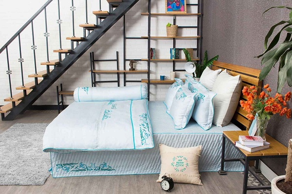

Bao lâu bạn nên giặt chăn ga gối đệm một lần?
Sản phẩm nào sau một thời gian sử dụng đều bám bụi bẩn trong đó những mẫu chăn ga gối đệm cũng không nằm ngoài điều này. Người ta thường nói chăn ga gối đệm lâu không giặt bẩn không khác gì bộ quần áo thể thao bạn vừa đi đá bóng về. Vì thế việc vệ sinh là rất cần thiết để bảo vệ sức khỏe các thành viên trong gia đình. Nhưng bao lâu bạn nên giặt chăn ga gối đệm một lần? Để trả lời được thông tin này mời bạn tham khảo một số thông tin cụ thể dưới đây nhé!
Sau khi mua và sử dụng những chiếc đệm êm ái hay bộ chăn ga gối đẹp mắt có thể mang đến cho bạn giấc ngủ ngon hơn. Việc sử dụng sản phẩm hàng ngày chắc chắn cần phải vệ sinh thường xuyên để chúng luôn sạch sẽ, không ảnh hưởng đến sức khỏe của bạn và các thành viên trong gia đình..
Nhưng bạn cần vệ sinh các sản phẩm này đúng cách sẽ giúp sản phẩm luôn bền đẹp như mới. Vậy bao lâu nên giặt chăn ga gối đệm một lần. Những thông tin rất thú vị dưới đây sẽ nhanh chóng giải đáp những thắc mắc của bạn.
Sau khi mua và sử dụng những chiếc đệm êm ái hay bộ chăn ga gối đẹp mắt có thể mang đến cho bạn giấc ngủ ngon hơn. Việc sử dụng sản phẩm hàng ngày chắc chắn cần phải vệ sinh thường xuyên để chúng luôn sạch sẽ, không ảnh hưởng đến sức khỏe của bạn và các thành viên trong gia đình..
Nhưng bạn cần vệ sinh các sản phẩm này đúng cách sẽ giúp sản phẩm luôn bền đẹp như mới. Vậy bao lâu nên giặt chăn ga gối đệm một lần. Những thông tin rất thú vị dưới đây sẽ nhanh chóng giải đáp những thắc mắc của bạn.
Tại sao phải vệ sinh chăn ga gối đệm
Giấc ngủ chính là thời điểm quan trọng nhất trong ngày để giúp cơ thể lấy lại năng lượng sau một ngày hoạt động mệt nhọc. Nhưng khi ngủ cơ thể sẽ tiến hành đào thải tế bào chết và chắc chắn lượng tế bào chết đó có thể bám chặt vào chăn ga gối đệm.
Bên cạnh đó những sản phẩm này còn lưu giữ mồ hôi cũng như những khí thải phát sinh trong quá trình trao đổi chất diễn ra trong cơ thể khi ngủ. Một thời gian dài tích tụ những khu vực này trở thành ổ nuôi dưỡng vi khuẩn, có khả năng sinh sôi và phát triển nhiều hơn. Đây chính là nguyên nhân gây ra tình trạng bệnh của bạn đặc biệt là những căn bệnh ngoài ra hoặc những căn bệnh liên quan đến đường hô hấp.
Chính vì thế bạn cần vệ sinh những sản phẩm này một cách thường xuyên nhất theo định kỳ để có thể bảo vệ sức khỏe cho cả gia đình. Song với mỗi loại sản phẩm với mức độ vệ khác nhau do phần kết cấu cũng như tính chất sản phẩm không cho phép bạn giặt quá nhiều có thể làm ảnh hưởng đến độ bền của sản phẩm.
Bên cạnh đó những sản phẩm này còn lưu giữ mồ hôi cũng như những khí thải phát sinh trong quá trình trao đổi chất diễn ra trong cơ thể khi ngủ. Một thời gian dài tích tụ những khu vực này trở thành ổ nuôi dưỡng vi khuẩn, có khả năng sinh sôi và phát triển nhiều hơn. Đây chính là nguyên nhân gây ra tình trạng bệnh của bạn đặc biệt là những căn bệnh ngoài ra hoặc những căn bệnh liên quan đến đường hô hấp.
Chính vì thế bạn cần vệ sinh những sản phẩm này một cách thường xuyên nhất theo định kỳ để có thể bảo vệ sức khỏe cho cả gia đình. Song với mỗi loại sản phẩm với mức độ vệ khác nhau do phần kết cấu cũng như tính chất sản phẩm không cho phép bạn giặt quá nhiều có thể làm ảnh hưởng đến độ bền của sản phẩm.

Bao lâu giặt các sản phẩm chăn ga gối đệm là hợp lý
Nếu như muốn trả lời được câu hỏi trong bao lâu nên giặt những sản phẩm chăn ga gối đệm cho không gian gia đình, mời bạn tham khảo thêm thông tin dưới đây.
Đối với sản phẩm vỏ ga, gối thời gian giặt nên được tiến hành với tần suất vào khoảng 1 tuần, 1 lần. Trường hợp quá bận rộn bạn nên giặt ga và gối khoảng 2 tuần/lần còn với đệm thì các chuyên gia khuyên cao vệ sinh 3 - 6 tháng/1 lần.
Với ruột chăn ga gối dù bạn không phải giặt nước thường xuyên song bạn cũng nên mua thường xuyên phơi ruột chăn hay ruột gối dưới ánh nắng mặt trời để có thể tiêu diệt được những loại vi khuẩn cùng mầm mống gây bẹnh ở trong chăn.
Trường hợp ruột chăn và ruột gối bị ố bẩn, bạn nên sử dụng dịch vụ giặt khô chứ không nên sử dụng máy giặt hay giặt bằng tay sản phẩm này.
Với sản phẩm đệm sử dụng hàng ngày thì bạn nên vệ sinh tổng thể lại khoảng 3 tháng một lần hay ngay sau khi đệm bị dính những loại vết bẩn. Nếu như muốn công việc vệ sinh diễn ra tiện lợi hơn bạn nên sử dụng máy hút bụi cũng như loại bỏ được hết những bụi bẩn bám ở trên mặt đệm hay mang đện ra phơi nắng nhẹ để chiếc đệm được khô thoáng nhất có thể.
Ngoài ra bạn có thể sử dụng bột Banking Soda đây là loại có tác dụng tẩy sạch mọi vết bẩn dính ở trên đệm. Trường hợp không giặt trước bằng nước sẽ có ảnh hưởng đến kết cấu cũng như độ bền sản phẩm.
Trên đây là một số thông tin rất thú vị ở trên chắc chắn đã đưa đến cho bạn một chu kỳ vệ sinh giặt giũ chăn ga gối đệm phù hợp. Đây là cách để những sản phẩm của bạn và gia đình sẽ luôn sạch sẽ, đảm bảo sức khỏe của tốt nhất cho bạn.
Đối với sản phẩm vỏ ga, gối thời gian giặt nên được tiến hành với tần suất vào khoảng 1 tuần, 1 lần. Trường hợp quá bận rộn bạn nên giặt ga và gối khoảng 2 tuần/lần còn với đệm thì các chuyên gia khuyên cao vệ sinh 3 - 6 tháng/1 lần.
Với ruột chăn ga gối dù bạn không phải giặt nước thường xuyên song bạn cũng nên mua thường xuyên phơi ruột chăn hay ruột gối dưới ánh nắng mặt trời để có thể tiêu diệt được những loại vi khuẩn cùng mầm mống gây bẹnh ở trong chăn.
Trường hợp ruột chăn và ruột gối bị ố bẩn, bạn nên sử dụng dịch vụ giặt khô chứ không nên sử dụng máy giặt hay giặt bằng tay sản phẩm này.
Với sản phẩm đệm sử dụng hàng ngày thì bạn nên vệ sinh tổng thể lại khoảng 3 tháng một lần hay ngay sau khi đệm bị dính những loại vết bẩn. Nếu như muốn công việc vệ sinh diễn ra tiện lợi hơn bạn nên sử dụng máy hút bụi cũng như loại bỏ được hết những bụi bẩn bám ở trên mặt đệm hay mang đện ra phơi nắng nhẹ để chiếc đệm được khô thoáng nhất có thể.
Ngoài ra bạn có thể sử dụng bột Banking Soda đây là loại có tác dụng tẩy sạch mọi vết bẩn dính ở trên đệm. Trường hợp không giặt trước bằng nước sẽ có ảnh hưởng đến kết cấu cũng như độ bền sản phẩm.
Trên đây là một số thông tin rất thú vị ở trên chắc chắn đã đưa đến cho bạn một chu kỳ vệ sinh giặt giũ chăn ga gối đệm phù hợp. Đây là cách để những sản phẩm của bạn và gia đình sẽ luôn sạch sẽ, đảm bảo sức khỏe của tốt nhất cho bạn.